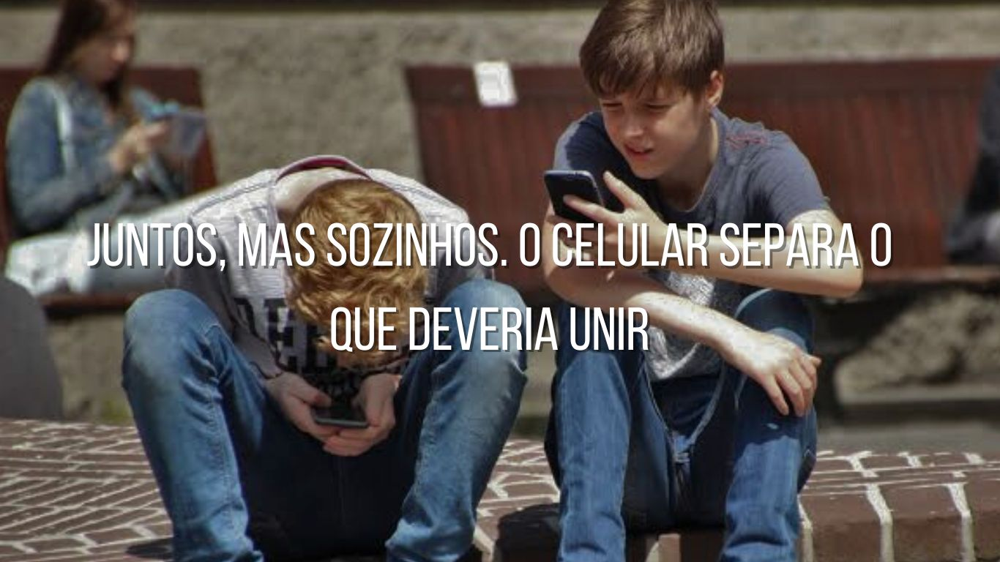
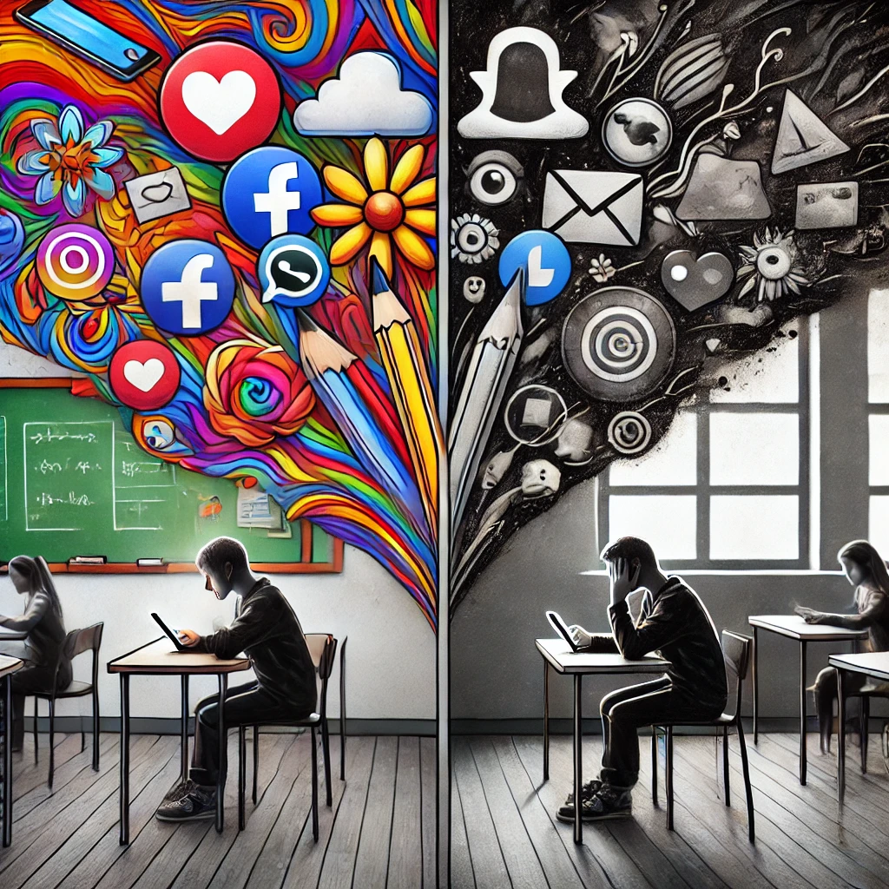

Em um mundo cada vez mais conectado, o celular se tornou uma extensão de nossas vidas. Ele não é mais apenas uma ferramenta de comunicação,
mas uma janela para o mundo, uma fonte constante de informações, redes sociais, entretenimento e até mesmo de trabalho. Mas, ao mesmo tempo
em que esses dispositivos oferecem tantas vantagens, eles também podem se tornar uma armadilha invisível.
Você já parou para pensar por quanto tempo está realmente no controle do seu celular? Ele vibra a cada notificação, te atraindo para uma
nova interação, uma nova atualização, um novo conteúdo que "necessita" da sua atenção. Cada rolagem na tela é uma pequena ação, mas se repetida
milhares de vezes por dia, pode dominar sua rotina.
Os algoritmos por trás dos aplicativos de redes sociais e outras plataformas conhecem seus interesses, preferências e até suas emoções,
criando um ciclo vicioso onde o celular se torna o centro do seu dia. Em vez de usar a tecnologia para melhorar sua vida, você acaba sendo
consumido por ela.
Então, a pergunta que fica é: você está no controle, ou está apenas reagindo ao que o celular e seus algoritmos lhe impõem?
Chegou o momento de refletir sobre esse poder, e, quem sabe, retomar as rédeas da sua própria atenção.
Os celulares são projetados para prender nossa atenção, e isso tem um impacto direto no aprendizado. Durante as aulas, notificações constantes e o hábito de checar as redes sociais fazem com que os estudantes se distraiam facilmente. A cada interrupção, o cérebro leva tempo para se reconectar ao conteúdo ensinado. Esse ciclo afeta a concentração e a retenção de informações, tornando o aprendizado menos eficiente. O uso excessivo do celular em sala de aula não apenas reduz a participação dos alunos, mas também prejudica a construção do pensamento crítico e analítico.

A escola é um ambiente essencial para o desenvolvimento social, mas o uso excessivo do celular pode criar barreiras entre os alunos. Em vez de interagirem entre si, muitos passam o intervalo olhando para a tela, deixando de desenvolver habilidades sociais importantes como empatia, comunicação e trabalho em equipe. Estudos mostram que a falta de interações presenciais pode levar ao isolamento, à dificuldade de lidar com conflitos e até ao aumento da ansiedade e depressão. A tecnologia aproxima quem está longe, mas pode afastar quem está perto.
Muitos estudantes usam o celular até tarde da noite, prejudicando a qualidade do sono. A luz azul das telas inibe a produção de melatonina, o hormônio responsável pelo sono, tornando mais difícil dormir bem. O resultado? Cansaço, falta de atenção e menor rendimento escolar. Pesquisas mostram que alunos que dormem menos têm maior dificuldade em processar informações e em realizar provas. Criar limites para o uso do celular antes de dormir pode melhorar a disposição e a capacidade de aprendizado durante o dia.
O Dilema das Redes: Conectados, mas Desconectados

O uso constante de redes sociais tem alterado profundamente a maneira como nos relacionamos com o mundo e com os outros. Em sala de aula, a presença de celulares pode ser um reflexo desse dilema. Embora ofereçam acesso a informações rápidas e interatividade, as plataformas digitais frequentemente desviam nossa atenção, criando uma distração que compromete o aprendizado e a produtividade. No entanto, como podemos equilibrar os benefícios da tecnologia com o foco necessário para um aprendizado eficaz?